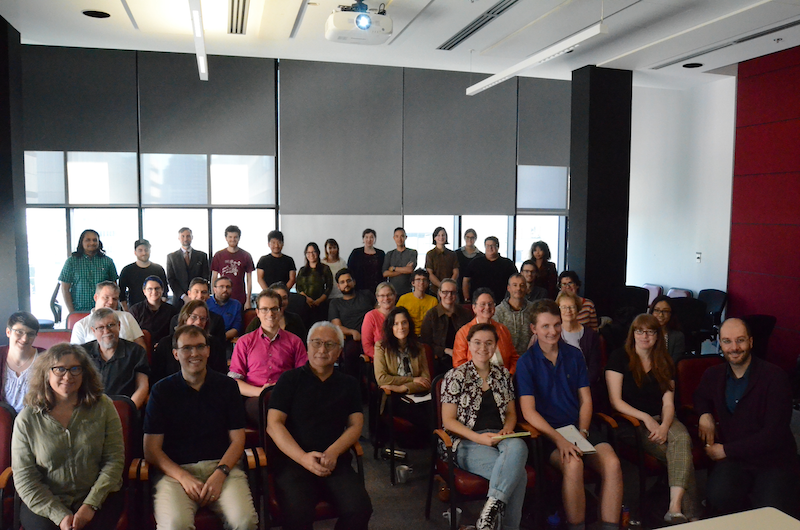
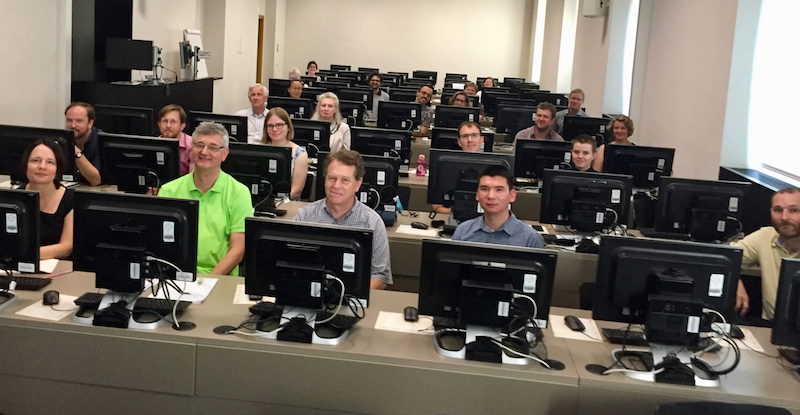
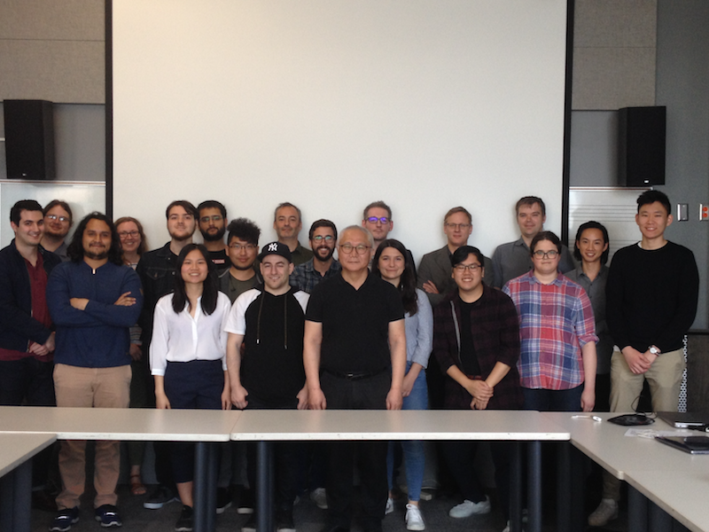
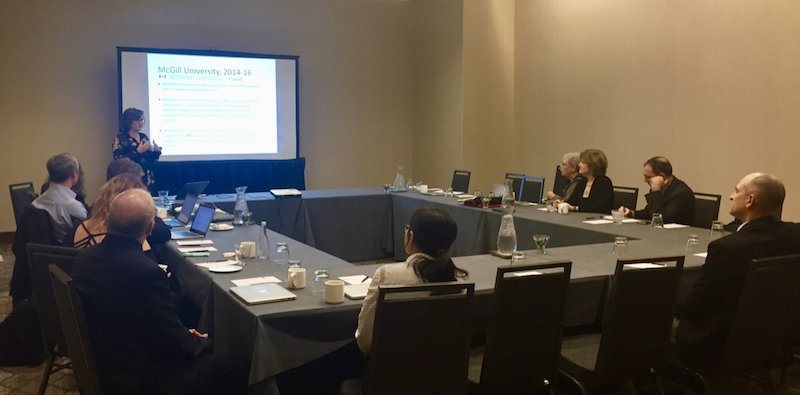
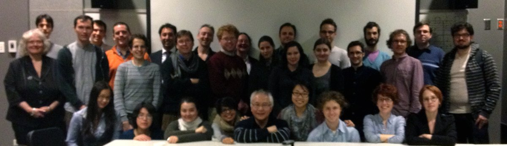
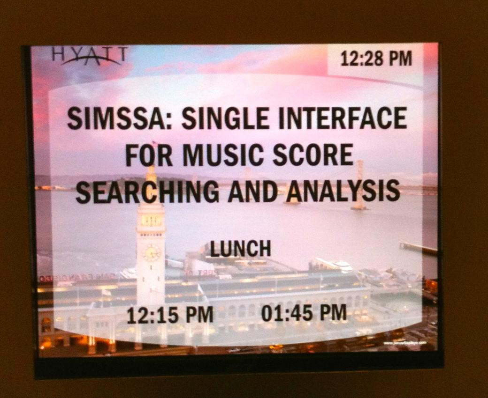

Workshops
2019
Workshop on SIMSSA XIX
CIRMMT, McGill University, Montreal, QC, September 21, 2019
On 21 September 2019, we had our 19th SIMSSA workshop, this time here at McGill in collaboration with CIRMMT. For more details, please check out our blog post.

Presenters included:
- Ichiro Fujinaga, SIMSSA PI
- Jennifer Bain, Dalhousie University
- Rebecca Shaw, University of Toronto
- Néstor Nápoles López, McGill University
- Evan Savage, McGill University
- Tim de Reuse, McGill University
- Juliette Regimbal, McGill University
- Caitlin Hutnyk, McGill University
- Imane Chafi, McGill University
- Alex Daigle, McGill University
- Julie Cumming, McGill University
- Martha Thomae, McGill University
- Yaolong Ju, McGill University
- Emily Hopkins, SIMSSA Project Manager
- David Garfinkle, McGill University
- Cory McKay, McGill University
- Sylvain Margot, McGill University
2018
Workshop on SIMSSA XVII
CIRMMT, McGill University, Montreal, QC, December 01, 2018
Earlier this month we had our seventeenth SIMSSA workshop, this time here at McGill in collaboration with CIRMMT. For more details, please check out our blog post.

Presenters included:
- Ichiro Fujinaga, SIMSSA PI
- Emily Hopkins, SIMSSA Project Manager
- Minh Anh Nguyen, McGill University
- Noah Baxter, McGill University
- Gabriel Vigliensoni, McGill University
- Tim De Reuse, McGill University
- Zoé McLennan, McGill University
- Juliette Regimbal, McGill University
- Alex Daigle, McGill University
- Néstor Nápoles, McGill University
- Andrew Kam, McGill University
- Martha Thomae, McGill University
- Matan Gover, McGill University
- David Garfinkle, McGill University
- Eamonn Bell, Columbia University
- Julie Cumming, McGill University
- Audrey Laplante, Université de Montréal
- Jada Watson, University of Ottawa
- Gustavo Polins Pedro, McGill University
- Yaolong Ju, McGill University
Workshop on SIMSSA XV
IAML, Leipzig, Germany, July 28, 2018
Our fifteenth SIMSSA Workshop took place in Leipzig on 28 July 2018 immediately following the annual congress of the International Association of Music Librarians. For more details, please check out our blog post.

Presenters:
- Ichiro Fujinaga, SIMSSA PI
- Emily Hopkins, SIMSSA Project Manager
- Jürgen Diet, Bavarian State Library
- Cory McKay, Marianapolis College
- Laurent Pugin, RISM-CH
Some of the other guests:
- André Avorio, Alexander Street Press
- Sonia Wronkowska, National Library of Poland
- Craig Sapp, Stanford, CCARH
- Erin Conor, University of Washington Libraries
- Tim Crawford, University of London, Goldsmiths
Workshop on SIMSSA XIV
CIRMMT, McGill University, Montreal, QC, May 28, 2018
On 28 May 2018, we hosted our fourteenth SIMSSA Workshop at Mcgill University. For more details, please check out our blog post.

Guest speakers included:
- Andy Irving, British Library
- Jorge Calvo-Zaragoza, Universitat Politècnica de Valencia
- Andrew Hankinson, Bodleian Libraries at Oxford
- Laurent Pugin, RISM-CH
DDMAL Students presenting:
- Eric Liu
- Minh Anh Nguyen
- Noah Baxter
- Zoé McLennan
- Andrew Tran
- Juliette Regimbal
- Andrew Kam
- Gustavo Polins Pedro
Other guests:
- Nat Condit-Schultz, SIMSSA postdoc
- Néstor Nápoles, McGill University
- Laura Beauchamp, McGill University
- Yaolong Ju, McGill University
- Alex Daigle, McGill University
- Ichiro Fujinaga, SIMSSA PI
- Emily Hopkins, SIMSSA Project Manager
Workshop on Digital Musicology
CIRMMT, McGill University, Montreal, QC, April 27, 2018
On 27 April, we held a workshop with CIRMMT RA 2 — Music Information Research. This workshop was designed as a companion to Eleanor Selfridge-Field’s CIRMMT Distinguished Lecture. Unfortunately her visit to Montreal had to be cancelled but we were able to hold the workshop anyways. For more details, please check out our blog post.

Speakers:
- Claire Arthur, SIMSSA postdoc
- Martha Thomae, McGill University
- Cory McKay, Marianapolis College
- Ian Lorenz, McGill University
- Néstor Nápoles, McGill University
- Nat Condit-Schultz, SIMSSA postdoc
Also in attendance:
- Peter Schubert, McGill University
- Glen Ethier, Vanier College
- Gabriel Vigliensoni, McGill University
- Kristin Franseen, McGill University
- Laura Beauchamp, McGill University
- Alessandra Ignesti, McGill University
- Matan Gover, McGill University
- Tim De Reuse, McGill University
- Emily Hopkins, SIMSSA Project Manager
2018
Workshop on SIMSSA XVI
AMS/SMT, San Antonio, TX, November 01, 2018
Workshop on SIMSSA XVI took place in San Antonio, Texas, adjacent to the joint meeting of the American Musicological Society and the Society for Music Theory (AMS/SMT 2018).

Presenters:
- Ichiro Fujinaga, SIMSSA PI
- Peter Schubert, McGill University
- Jennifer Bain, Dalhousie University
- Karen Desmond, Brandeis University
Guests:
- Jessie Ann Owens, UC Davis Arts
- Dolores Pesce, Washington University in St. Louis
- David Day, Brigham Young University
- Trevor de Clercq, Middle Tennessee State University
- Richard Freedman, Haverford College
- Sarah Ann Long, Michigan State University
- René Rusch, University of Michigan
2017
Workshop on SIMSSA XII
CIRMMT, McGill University, Montreal, QC, August 07, 2017
Featuring presentations on recent work in the SIMSSA Project, including Pixel.js, the Interactive Classifier, Neon.js, and our latest OMR developments. Craig Sapp was our featured Keynote Speaker. This workshop was co-organized by CIRMMT Research Axis 2 (Music information research) and SIMSSA. It took place on Aug. 7, 2017, in the A832 in the Wirth Music Building at McGill University. For more details, please check out our blog post.
Guests included:
- Claire Arthur, McGill University
- Alex Daigle, McGill University
- Ichiro Fujinaga, CIRMMT, McGill University
- David Garfinkle, McGill University
- Andrew Hankinson, Bodleian Libraries, University of Oxford
- Yaolong Ju, CIRMMT, McGill University
- Cory McKay, CIRMMT, Marianapolis College
- Zoé McLennan, McGill University
- Alex Morgan, L’université libre de Bruxelles
- Sacha Perry-Fagant, McGill University
- Zeyad Saleh, McGill University
- Craig Sapp, CCARH, Stanford University
- Martha Thomae, CIRMMT, McGill University
- Andrew Tran, McGill University
- Gabriel Vigliensoni, CIRMMT, McGill University
- Jorge Calvo-Zaragoza, McGill University
- Ké Zhang, McGill University
2017
Symposium: Machine-Reading and Crowdsourcing Medieval Manuscripts
Eastman School of Music, Hatch Recital Hall, Rochester, NY, October 26, 2017
Guests included:
- Michael Alan Anderson, Eastman School of Music
- Jennifer Bain, Dalhousie University
- Kate Helsen, University of Western Ontario
- Debra Lacoste, University of Waterloo
- Sarah Long, Michigan State University
- Tamsyn Rose-Steel, Johns Hopkins University
- Rebecca Shaw, Dalhousie University
- Barbara Swanson, York University
Workshop on SIMSSA XIII
Art Gallery of Nova Scotia, Halifax, NS, September 22, 2017
Held at the Art Gallery of Nova Scotia, adjacent to the Tenth Annual Conference of the Atlantic Mediaevalist Association, SIMSSA Workshop XIII featured updates on the Cantus Ultimus project, OMR Correction and the MEI Neumes Module Schema.
Guests included:
- Jennifer Bain, Dalhousie University
- Inga Behrendt, Eberhard Karls Universität Tübingen
- Elsa De Luca, Universidade Nova de Lisboa
- Ichiro Fujinaga, McGill University
- Alessandra Ignesti, McGill University
- Debra Lacoste, University of Waterloo
- Sarah Long, Michigan State University
- Rebecca Shaw, Dalhousie University
- Mirka Marie Tiede, Eberhard Karls Universität Tübingen
2016
Workshop on SIMSSA X
CIRMMT, McGill University, Montreal, QC, September 24, 2016
This is the tenth in the series of SIMSSA Workshops, highlighting recent developments in the SIMSSA Projects. This workshop is organized by CIRMMT Research Axis 2 (Music information research). It took place on Saturday, September 24, 2016, in A832 (New Music Building), hosted at McGill University. For more details, please check out our blog post.

Guests included:
- Cory McKay, Marianopolis College
- Ichiro Fujinaga, CIRMMT, Schulich School of Music, McGill University
- Emily Hopkins, SIMSSA Project Manager, Schulich School of Music, McGill University
- Samuel Howes, McGill University
- Reiner Krämer, CIRMMT, Schulich School of Music, McGill University
- Alexandre Parmentier, McGill University
- Alexander Morgan, McGill University
- Claire Arthur, McGill University
- Malcolm Sailor, McGill University
- David Garfinkle, McGill University
- Martha Thomae, McGill University
- Justin Bell, McGill University
2016
Workshop on SIMSSA XI
AMS/SMT, Vancouver, BC, November 06, 2016
The eleventh SIMSSA Workshop, highlighting recent developments in the SIMSSA project, took place at the joint AMS/SMT meeting in Vancouver on Thursday, November 6, 2016.
Guests included:
- Anna Zayaruznaya, Yale University
- Michael Alan Anderson, Eastman School of Music
- Jessie Ann Owens, UC Davis Arts
- Anna Maria Busse Berger, UC Davis Arts
- Karol Berger, Stanford University
- Ross Duffin, Case Western Reserve University
- Dana Marsh, Indiana University Bloomington
- David Huron, Ohio State University
- Benjamin Albritton, Stanford University Libraries
- Kate Chapman, Indiana University Bloomington
- David Headlam, Eastman School of Music
- Rob Wegman, Princeton University
- J. Peter Burkholder, Indiana University Bloomington
- Richard Freedman, Haverford College
- Peter Jeffery, University of Notre Dame
- Margot Fassler, University of Notre Dame
- Eleanor Selfridge-Field, Stanford University
- Ian Quinn, Yale University
- Megan Long, Oberlin College and Conservatory
- Christopher Brody, Eastman School of Music
- Ben Duane, Washington University in St. Louis
- Eric Isaacson, Indiana University Bloomington
- Daniel Shanahan, Louisiana State University
- Susan Forscher Weiss, Peabody Institute (Johns Hopkins University)
- Christopher White, University of Masachusetts Amherst
- Kirill Zikanov, Yale University
- Yolanda Plumley, University of Exeter
- Charles Atkinson, Ohio State University
- Thomas Forest Kelly, Harvard University
- Barbara Haggh-Huglo, University of Maryland
- Honey Meconi, Eastman School of Music
- Kate van Orden, Harvard University
- Robert Gjerdingen, Northwestern University
- Christopher Reynolds, UC Davis Arts
- Alexis Luko, Carleton University
- Jeanice Brooks, University of Southampton
- Matthew Peattie, University of Cincinnati
- David Rothenberg, Case Western Reserve University
- André Avorio, Alexander Street Press
- Deborah Lawrence, St. Mary’s College of Maryland
- Jennifer Bain, Dalhousie University
- Karen Desmond, Brandeis University
- Jane Hatter, University of Utah
- Rebecca Maloy, University of Colorado Boulder
- Laurent Pugin, RISM
- Julie Cumming, McGill University
- Debra Lacoste, University of Waterloo
- Catherine Motuz
- Andrew Hankinson, Bodleian Libraries, University of Oxford
- Alex Morgan, L’université libre de Bruxelles
- Reiner Krämer, McGill University
Workshop on SIMSSA VIII
CIRMMT, McGill University, Montreal, QC, May 21, 2016
This is the eighth in the series of SIMSSA Workshops, highlighting recent developments in the SIMSSA and Cantus Ultimus Projects. The workshop took place after the Music Encoding Conference, hosted at McGill University.
Guests included:
- Ryan Bannon, Schulich School of Music, McGill University
- Marina Borsodi-Benson, Schulich School of Music, McGill University
- Jorge Calvo-Zaragoza, University of Alicante (visiting PhD researcher)
- Karen Desmond, Schulich School of Music, McGill University
- Andrew Fogarty, McGill University
- Ichiro Fujinaga, CIRMMT, Schulich School of Music, McGill University
- Andrew Hankinson, CIRMMT, Schulich School of Music, McGill University
- Emily Hopkins, SIMSSA Project Manager, Schulich School of Music, McGill University
- Reiner Krämer, CIRMMT, Schulich School of Music, McGill University
- Ian Lorenz, Schulich School of Music, McGill University
- Alexandre Parmentier, McGill University
2015
Workshop on SIMSSA VII
MedRen, Brussels, Belgium, July 08, 2015
SIMSSA Workshop VII took place at MedRen in Brussels. Ichiro Fujinaga introduced the workshop and gave some recent updates. Julie Cumming and Andrew Hankinson gave updates on the Analysis and Content axes, and Laurent Pugin discussed Verovio. For more details, please check out our blog post.

Guests included:
- Jennifer Bain, Dalhousie University
- Ashley Burgoyne, University of Amsterdam
- Julia Craig-McFeely, Oxford University
- Julie Cumming, McGill University
- Karen Desmond, McGill University
- Dan Donnelly, University of Toronto
- Ichiro Fujinaga, McGill University
- Andrew Hankinson, McGill University
- Jane Hatter, University of Utah
- Kate Helsen, Western University
- Alessandra Ignesti, McGill University
- Jan Koláček, Charles University, Prague
- Debra Lacoste, Conrad Grebel University College
- Elsa de Luca, Bristol University
- Sarah Ann Long, Michigan State University
- Cory McKay, Marianapolis College
- Alex Morgan, McGill University
- Catherine Motuz, McGill University
- Laurent Pugin, RISM
- Peter Schubert, McGill University
- Masako Tanzawa
Workshop on SIMSSA VI
IAML, New York, NY, June 27, 2015
Workshop on SIMSSA VI took place at the IAML/IMS Congress, “Music Research in the Digital Age.” For more details, please check our blog post.

Guests included:
- Sarah Jane Adams, Harvard University
- André Avorio, Alexander Street Press
- Richard Chesser, Richard, British Library
- Tim Crawford, University of London, Goldsmiths
- Julie Cumming, McGill Unversity
- Jürgen Diet, Bayerische Staatsbibliothek
- Barbara Dobbs Mackenzie, RILM
- Ichiro Fujinaga, McGill University
- Jane Gottlieb, The Juilliard School
- Andrew Hankinson, McGill University
- Johannes Kepper, University of Paderborn
- Audrey Laplante, Université de Montréal
- Laurent Pugin, RISM
- Kristina Richts, University of Paderborn
- Perry Roland, University of Virginia
- Craig Sapp, Stanford University
- Michael Schutz, McMaster University
- Judy S. Tsou, University of Washington
- Sonia Wronkowska, Adam Mickiewicz University
2014
Workshop on SIMSSA IV: ONRP and Cantus Ultimus
CIRMMT, McGill University, Montreal, QC, September 29, 2014
Workshop on SIMSSA (Single Interface for Music Score Searching and Analysis) IV
Highlighted recent development in the SIMSSA project and the ELVIS (Electronic Locator of Vertical Interval Successions) project. Included presentations by guests from two other SSHRC projects: Optical Neume Recognition project and Cantus Ultimus project. For more details, please check out our blog post.

Guests included:
- Christopher Antila, CIRMMT, Schulich School of Music, McGill University
- Jennifer Bain, Dalhousie University
- Ryan Bannon, Schulich School of Music, McGill University
- Inga Behrendt, University of Tübingen
- Ruth Berkow, Faculty of Engineering, McGill University
- Julie Cumming, CIRMMT, Schulich School of Music, McGill University
- Douglas Eck, Google, USA
- Andrew Fogarty, Faculty of Science, McGill University
- Ichiro Fujinaga, CIRMMT, Schulich School of Music, McGill University
- Andrew Hankinson, CIRMMT, Schulich School of Music, McGill University
- Kate Helsen, Western University
- Andrew Horwitz, CIRMMT, Schulich School of Music, McGill University
- Debra Lacoste, University of Waterloo
- Evan Magoni Faculty of Arts, McGill University
- Lillio Mok, Faculty of Science, McGill University
- Alexander Morgan, CIRMMT, Schulich School of Music, McGill University
- Alan Sexton, University of Birmingham
- Andie Sigler, CIRMMT, School of Computer Science,, McGill University
- Barbara Swanson, Dalhousie University
- Jon Wild, CIRMMT, Schulich School of Music, McGill University
- Timothy Wilfong, Schulich School of Music, McGill University
2014
SIMSSA Luncheon at the AMS/SMT
AMS/SMT, Milwaukee, WI, November 07, 2014
Informational luncheon and discussions on SIMSSA: Single Interface for Music Score Searching and Analysis. Included presentations by Ichiro Fujinaga, Julie Cumming, and Jennifer Bain.
Guests included:
- Barbara H. Haggh-Huglo
- Barbara Swanson
- Carla Zecher
- Catherine Motuz
- Clare Bokulich
- Cory Mckay
- Daniel Thomas Shanahan
- Darwin F. Scott
- Debra Lacoste
- Dolores Pesce
- Eleanor Selfridge-Field
- Eric J. Isaacson
- Fran Barulich
- Ian Quinn
- Ichiro Fujinaga
- Jane Hatter
- Jennifer Bain
- Jesse Rodin
- Johanna Devaney
- Julie Cumming
- Karen Desmond
- Laurent Pugin
- Margot Fassler
- Micah Walter
- Michael Anderson
- Remi Chiu
- Susan Weiss
AMS/SMT Working Group
AMS/SMT, Milwaukee, WI, November 06, 2014
Working group and discussion of SIMSSA at the AMS/SMT in Milwaukee.
Guests included:
- Barbara Swanson
- Jon Wild
- Peter Schubert
- Barbara Mackenzie
- Catherine Motuz
- Christopher Antila
- Clare Bokulich
- Cory Mckay
- Dan Donnelly
- Ichiro Fujinaga
- Jacob Sagrans
- Jane Hatter
- Jennifer Bain
- Jesse Rodin
- Julie Cumming
- Karen Desmond
- Laurent Pugin
- Mauro Calcagno
- Mitch Brodsky
- René Rusch
- Rory O’Connor
2013
Workshop on SIMSSA III: Part 2—ELVIS
CIRMMT, McGill University, Montreal, QC, September 17, 2013
Read the summary of all presentations of this workshop in its blog post.
Workshop on SIMSSA III: Part 1—Music Digitization in the World
CIRMMT, McGill University, Montreal, QC, September 07, 2013
Read the summary of all presentations of this workshop in its blog post.
CIRMMT Workshop: ELVIS Hack Day
CIRMMT, McGill University, Montreal, QC, May 11, 2013
Searching symbolic musical data for repeated patterns: The ELVIS project. For a summary of this event and photos see the related blog post.
CIRMMT Workshop: The ELVIS Project
CIRMMT, McGill University, Montreal, QC, May 10, 2013
Searching Symbolic Musical Data for Repeated Patterns: The ELVIS project. Speakers:
- Frauke Jürgensen (U. Aberdeen);
- Ian Knopke (BBC, London);
- Michael Scott Cuthbert (MIT);
- Christopher White (Yale),
- Kirill Zikanov (Yale);
- Julie Cumming (McGill),
- Christopher Antila (McGill),
- Catherine Motuz (McGill).
For a summary of this event see the related blog post.
2012
Workshop on SIMSSA II
CIRMMT, McGill University, Montreal, QC, July 28, 2012
“Workshop on SIMSSA: Single Interface for Music Score Searching and Analysis II” organized by CIRMMT Research Axis 3. For more details, please check out our blog post.

Keynote speaker:
- Eleanor Selfridge-Field, Stanford University
Other guests included:
- Christopher Antila, Schulich School of Music, McGill University
- Gregory Burlet, CIRMMT, Schulich School of Music, McGill University
- Julie Cumming, CIRMMT, Schulich School of Music, McGill University
- Jürgen Diet, Bavarian State Library, Germany
- Andrew Hankinson, CIRMMT, Schulich School of Music, McGill University
- Anton Khelou, School of Computer Science, McGill University
- Wendy Liu, School of Computer Science, McGill University
- Alastair Porter, CIRMMT, Schulich School of Music, McGill University
- Laurent Pugin, RISM Switzerland
- Brian Stern, School of Computer Science, McGill University
- Gabriel Vigliensoni, CIRMMT, Schulich School of Music, McGill University
CIRMMT Workshop: Processing Large Amounts of Musical Information
CIRMMT, McGill University, Montreal, QC, February 17, 2012
Workshop on processing large amounts of musical information organized by CIRMMT Research Axis 3. For more details, please check out our blog post.
Speakers including:
- Thierry Bertin-Mahieux, School of Engineering and Applied Science, Columbia University
- John Ashley Burgoyne, CIRMMT, Schulich School of Music, McGill University
- Julie Cumming, CIRMMT, Schulich School of Music, McGill University
- Michael Cuthbert, Music Program, MIT
- J. Stephen Downie, GSLIS, University of Illinois at Urbana-Champaign
- Ichiro Fujinaga, CIRMMT, Schulich School of Music, McGill University
- Frauke Jurgenson, Music, University of Aberdeen
- Ian Quinn, Music Department, Yale University
- George Tzanetakis, Computer Science Department, University of Victoria
- Christopher White, Music Department, Yale University

2012
Cantus Ultimus Workshop
CIRMMT, McGill University, Montreal, QC, September 08, 2012
Cantus Ultimus Workshop: Building the ideal digital music library for plainchant. Explored the potential applications of SIMSSA (Single Interface for Music Score Searching and Analysis) technologies developed at CIRMMT for enhancing the Cantus database, especially towards implementing full-music search of plainchant manuscripts.
Guests included:
- Jennifer Bain, Dalhousie University
- Gregory Burlet, CIRMMT, Schulich School of Music, McGill University
- Julie Cumming, CIRMMT, Schulich School of Music, McGill University
- Ichiro Fujinaga, CIRMMT, Schulich School of Music, McGill University
- Andrew Hankinson, CIRMMT, Schulich School of Music, McGill University
- Kate Helsen, Independent scholar
- Debra Lacoste, University of Waterloo
- Saining Li, School of Computer Science, McGill University
- Wendy Liu, School of Computer Science, McGill University
2011
Workshop on SIMSSA I: AMS 2011
Hyatt Regency, San Francisco, CA, November 11, 2011
The first SIMSSA Workshop at the Annual American Musicological Society meeting in San Francisco on 11 November 2011. 
Participants included:
- Michael Scott Cuthbert
- Mary Lewis
- Eleanor Selfridge-Field
- Jennifer Thomas
- Sarah Long
- Daniel Donnelly
- Ross W. Duffin
- Jane Daphne Hatter
- Philippe Vendrix
- David Crook
- Daniel Boomhower
- Susan Weiss
- Mauro Calcagno
- Craig Sapp
- Don Randel
- Julie Cumming
- Ichiro Fujinaga
SIMSSA Luncheon: International Association of Music Libraries 2011
Dublin, Ireland, July 29, 2011
SIMSSA Luncheon at the International Association of Music Libraries, Archives and Documentation Centres at Trinity College in Dublin, Ireland.
Attended by:
- Barbara Mackenzie
- Julia Craig-McFeely
- Richard Chesser
- Sarah Adams
- Massimo Gentili-Tedeschi
- Erin Mayhood
- Brian McMillan
- Laurent Pugin
- Andrew Hankinson
- Jane Gottlieb
- Sandra Tuppen